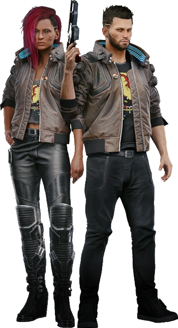
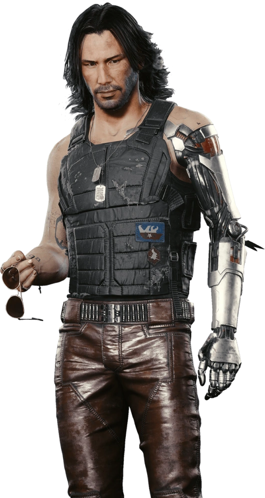
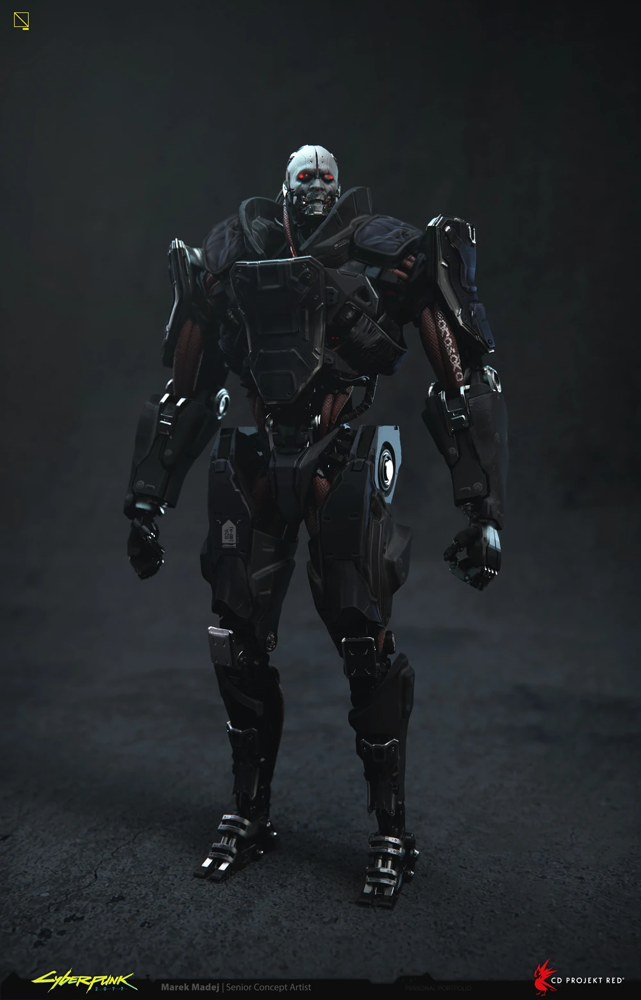
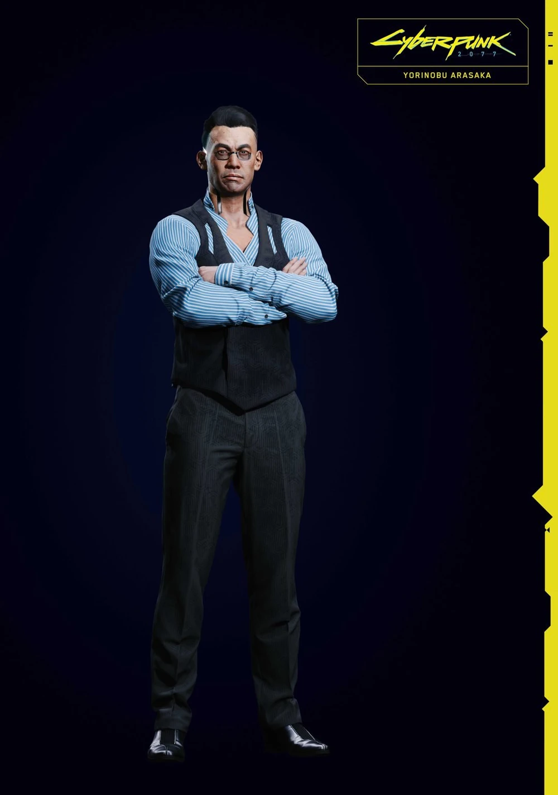
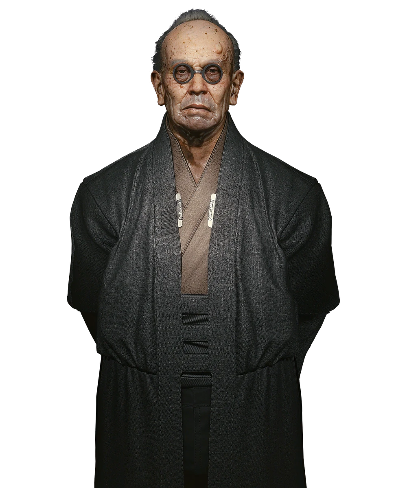
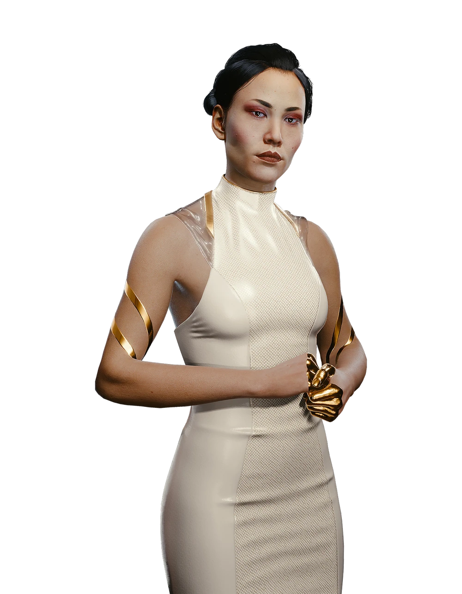

V
V, un alias pour Vincent/Valérie (dépendant du genre choisi) est la/le protagoniste du jeu vidéo Cyberpunk 2077 contrôlé(e) par le joueur.Son genre,apparence,aptitude,comportement dépendera grandement des choix du jouer.Ses Origines différent en fonction du mode histoire qui est choisis par le joueur.
Jackie Welles

Jackie Welles, plus connu sous le nom de Jackie est un personnage présent dans Cyberpunk 2077. Il est l'un des premiers points de contact de V ainsi que le partenaire du joueur lors de plusieurs missions. Il parle espagnol et n'aime pas les désosseurs. Il est attaché aux valeurs telles que l'amitié, la loyauté et la famille. À terme, il prévoit de subvenir aux besoins de sa propre famille et de vivre dans le luxe, mais il s'impatiente car ce n'est encore qu'un rêve insaisissable.
Johnny Silverhand
Johnny Silverhand,Née Robert John Linder,était un populaire rockerboy et chanteur du groupe Samurai. Ancien militaire qui a défini le movement "Rockerboy" connu aujourd'hui,Silverhand était connu pour milité contre le gouvernement NUSA et les megacorporations,lui donnant souvent le titre de terroriste. Malgré son charisme et charme,Johnny était connu par ses proches comme irrationnel,impulsif et manipulateur. Ce dernier trouva la mort lors d'une attaque envers Arasaka en essayant de sauver sa compagne,Alt Cunningham.Sa mort fut enregistré à la date du 20 août 2023. Lors d'une mission qui ne s'est pas passé comme prévu,V s'est installé une "relic" qui possède l'engramme de Johnny Silverhand.
Adam Smasher
Adam Smasher est un mercenaire entièrement robotisé.Il est un employé de la megacorporation au nom d'Arasaka et est le chef de la branche de sécurite de cette dernière.Il est aussi le bodyguard personnel de Yorinobu Arasaka. Adam est connu de par son apparence atypique,ainsi que de son humanité inexistante.Il est aussi connu pour être le rival d'un célèbre mercenaire Morgan Blackhand.
Yorinobu Arasaka
Yorinobu Arasaka est le fils cadet de Saburo Arasaka, et le leader bōsōzoku rebelle du gang Dragons d'acier ainsi que de Iron Lotus. C'est le principal antagoniste de Cyberpunk 2077.
Saburo Arasaka
Saburo Arasaka (荒坂 三郎) est le PDG d'Arasaka Corporation et l'un des hommes les plus puissants du monde. À 101 ans, il a encore une forte emprise sur l'entreprise, qu'il souhaite utiliser comme son outil de domination mondiale.
Hanako Arasaka
Hanako Arasaka (荒坂 華子) est le troisième enfant et la seule fille de Saburo. Hanako est une netrunneuse qualifiée et la cheffe la faction Kiji (雉) d'Arasaka Corporation.